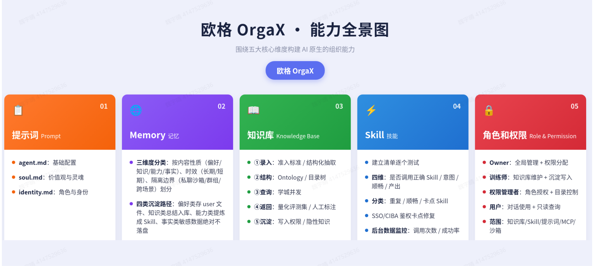
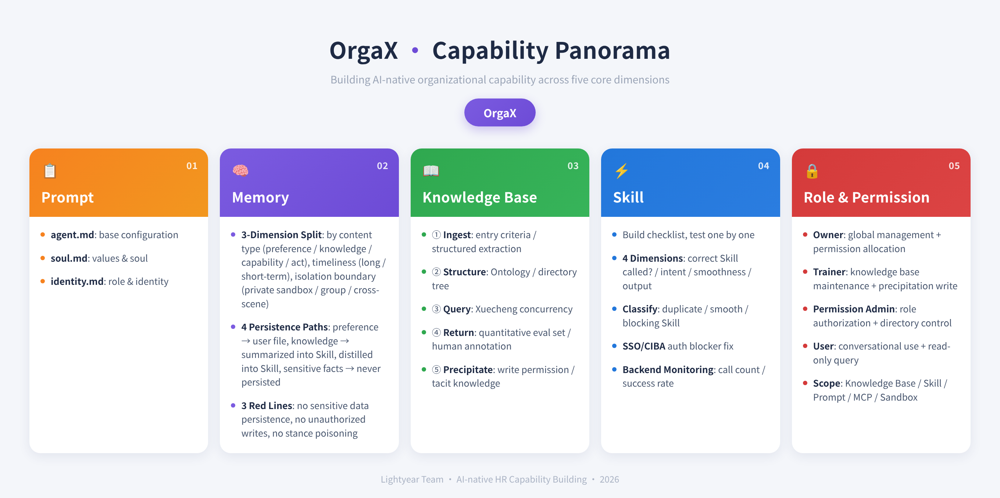

Agent Training Assistant · 2026.06 – 2026.09 · Beijing
Meituan (美团) is China's leading e-commerce platform for services, founded in 2010 and listed on the Hong Kong Stock Exchange (3690.HK). With over 700 million annual transacting users, Meituan connects consumers with local businesses across food delivery, in-store dining, hotel & travel booking, and retail. As a Fortune 500 company, Meituan is also a major force in AI and autonomous delivery—operating one of the world's largest real-time dispatch systems and investing heavily in LLM-powered agent technologies to transform service industry operations.
During my internship at Meituan, I worked on optimizing AI Agents deployed in production business workflows—including order processing, customer communication, and internal operations. I focused on three core technical challenges: Skill execution reliability, knowledge base quality, and long-term memory management. Each required diving deep into agent internals, designing evaluation frameworks, and shipping measurable improvements.


Unstable skill execution with inconsistent success rates across different use cases and trigger patterns.
When answering internal policy questions, the agent relied on model memory instead of retrieval, leading to outdated or hallucinated responses.
Lock core scenarios, ensure longitudinal comparability. High-frequency queries + document back-derivation + manually designed boundary cases.
Cover emerging issues, ensure horizontal sensitivity. Online Bad/Good Cases + user query sampling + KB update back-derivation.
Long-term memory grows too large for the context window, causing overflow, latency spikes, and diluted focus on the current task.
Layered Storage. A master index resides in context, recording which category maps to which partition. User preferences and historical decisions are split into separate sub-files by category. Context loads only the index, not the full memory volume.
On-Demand Retrieval. Read the index to locate the target partition, then fetch only what's needed. Release immediately after use — no long-term context occupation. Full memory remains addressable, while the context window stays consistently lightweight.
Without proper access control, unauthorized configuration changes to agent prompts, skills, and deployments could disrupt production workflows and introduce security risks.
Collaborated across teams to define a four-role access control model for the agent platform. Each role maps to specific permissions, creating clear operational boundaries and a security baseline for the multi-tenant agent ecosystem:
1. AI Agents in production ≠ demos. Real-world deployment requires robust evaluation, monitoring, and iteration loops. A single prompt template isn't enough—you need a system.
2. Data closes the loop. The evolution dashboard and KB evaluation suite turned agent optimization from "gut feeling" into a measurable, repeatable process. Every change was tracked and validated.
3. Memory is architecture, not storage. The Directory Tree + Progressive Loading pattern solved context overflow without losing information fidelity. Full memory addressable, context window lightweight.
4. Security scales with roles. The four-role RBAC model created clear boundaries: Owner, Trainer, Permission Admin, and User—ensuring that every action on the platform is authorized and auditable.